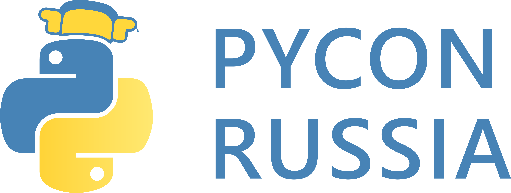

Domain Driven Design Toolkit
Artem Malyshev
@proofit404
BIO
- Co-Founder at drylabs.io
- dry-python.org
- Django Channels 1.0
- 5 years of experience in Python
Implicit API
class Purchases(viewsets.ModelViewSet):
queryset = Purchase.objects.all()
serializer_class = PurchaseSerializer
permission_classes = (CanPurchase,)
filter_class = PurchaseFilterrouter.register('/api/purchases/', Purchases)- What exactly does this class do?
- How to use it?
Complexity
Accidental complexity refers to challenges that developers unintentionally make for themselves as a result of trying to solve a problem.
Essential complexity is just the nature of the beast you're trying to tame.
Accidental complexity
- AsyncIO vs. Gevent
- PostgreSQL vs. MongoDB
- Python vs. Go
- Emacs vs. Vim
- Tabs vs. Spaces

What is the domain-driven design?
Focus on the core complexity and opportunity in the domain
Explore models in a collaboration of domain experts and software experts
Write software that expresses those models explicitly
Speak ubiquitous language within a bounded context
What is a model?
HINT: Not a UML diagram
A set of services, entities and value objects expressed in classes, methods, and refs.
dry-python
A set of libraries for pluggable business logic components.
Define a user story in the business transaction DSL.
Separate state, implementation and specification.
Layout
project
├── admin
├── forms
├── migrations
├── models
├── services
├── templates
└── viewsSpecification DSL
from stories import story, arguments
class Purchase:
@story
@arguments("invoice_id", "user")
def make(I):
I.find_order
I.find_price
I.find_invoice
I.check_balance
I.persist_payment
I.persist_purchase
I.send_purchase_notificationSteps implementation
from stories import Failure, Success
class Purchase:
# ...
def find_invoice(self, ctx):
invoice = Invoice.objects.get(pk=ctx.invoice_id)
return Success(invoice=invoice)
def check_balance(self, ctx):
if ctx.user.can_pay(ctx.invoice):
return Success()
else:
return Failure()Story Execution
>>> Purchase().make(category_id=2)
Purchase.make:
find_order
find_price
check_purchase (PromoCode.validate)
find_code (skipped)
check_balance
find_profile
Context:
category_id = 1318 # Story argument
user = <User: 3292> # Story argument
category = <Category: 1318>
# Set by Purchase.find_categorypros
- Clean flow in the source code
- Separate step implementation
- Each step knows nothing about a neighbor
- Easy reuse of code
- Allows to instrument code easily
DEBUG TOOLBAR
py.test
Sentry
ELK

- We do not have the tooling to work with data
- There are no data contracts written in code
Layout
project
├── admin
├── aggregates
├── forms
├── migrations
├── models
├── services
├── templates
└── viewsdataclasses
from dataclasses import dataclass
from typing import List, NewType
OrderId = NewType("OrderId", int)
@dataclass
class LineItem:
product_id: ProductId
@dataclass
class Order:
primary_key: OrderId
items: List[LineItem]State Contract
from pydantic import BaseModel
class Purchase:
@story
def make(I):
# ...
@Purchase.make.contract
class Context(BaseModel):
user: User
invoice_id: InvoiceId
invoice: Optional[Invoice]pros
- Explicit data contracts and relations in code
- Data store independent
- Catch errors when they occur
- Not when they propagate to exception
cons
- Working with data sources manually
Declarative mappers from ORM models to domain entities. And back again!
Layout
project
├── admin
├── aggregates
├── forms
├── migrations
├── models
├── repositories
├── services
├── templates
└── viewsDjango ORM
from mappers import Mapper
from app.aggregates import Order, OrderId, User
from app.models import OrderModel, UserModel
mapper = Mapper(Order, OrderModel, {"primary_key": "id"})
@mapper.reader
def load_order(id: OrderId, user: User) -> Order:
friends = UserModel.objects.filter(
purchases=OuterRef("pk"), friends=user.primary_key)
return OrderModel.objects.filter(pk=id).annotate(
purchased_by_friends=Exists(friends)).get()Swagger definitions
from mappers import Mapper
from bravado import swagger_model
from app.aggregates import Price
spec = swagger_model.load_file("price_service.yml")
mapper = Mapper(Price, spec.definitions["Price"])
@mapper.reader
def load_price(id: PriceId) -> Price:
return requests.get(f"http://172.16.1.7/get/{id}")GraphQL queries
from mappers import Mapper
from gql import gql, Client, build_schema
from app.aggregates import Invoice
schema = build_schema("invoice_service.graphql")
mapper = Mapper(Invoice, schema.get_type_map()["Invoice"])
@mapper.reader
def load_invoice(id: InvoiceId) -> Invoice:
return Client(schema=schema).execute(gql("""
{
loadInvoice(id: %(id)d)
}
""", {"id": id}))
How we use third-party libraries
from pusher import Pusher
class Purchase:
def send_purchase_notification(ctx):
Pusher().trigger("private-user-1")def test_before(monkeypatch):
monkeypatch.setattr(pusher, "Pusher", Mock())
# ...
pusher.Pusher.trigger.assert_called_once_with(
"private-user-1"
)How to use it with DI
@dataclass
class Purchase:
def send_purchase_notification(ctx):
self.trigger_message(UserStream(ctx.user))
trigger_message: Emitterdef test_after(emitter):
# ...
Purchase.trigger_message.assert_called_once_with(
UserStream(User(primary_key=1))
)Provide composition instead of inheritance.
Solves top-down approach problem.
Layout
project
├── admin
├── aggregates
├── forms
├── migrations
├── models
├── repositories
├── services
├── templates
├── implementation
└── viewsInjection
from dependencies import Injector, Package
app = Package('app')
class MakePurchase(Injector):
make_purchase = app.services.Purchase.make
load_category = app.repositories.load_category
load_price = app.repositories.load_price
load_profile = app.repositories.load_profile
MakePurchase.make_purchase(category_id=1, price_id=1)